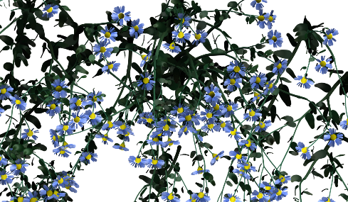

若要打开 Paint Effects 面板，请执行以下操作：
- 在“面板”(Panels)菜单中：
- 在主菜单栏中：。
默认“Paint Effects”面板是 2D 画布。

Paint Effects 面板菜单栏
以下是 Paint Effects 面板菜单栏中的菜单项。另请参见下面的“Paint Effects 面板工具栏”GUID-4B5FF2A6-F304-48E4-8DE1-9DA809555E99.htm#GUID-4B5FF2A6-F304-48E4-8DE1-9DA809555E99__WS17956D7ADBC6E736-21667008117AE32FFF7-7FFE。
绘制(Paint)
- 绘制场景(Paint Scene)、绘制画布(Paint Canvas)
-
选择这些选项可以在 2D 画布或 3D 场景中的绘制之间切换。请参见在进行绘制的视图之间切换。
- 保存快照(Save Snapshot)
-
您可以将“Paint Effects”画布或场景另存为 .iff 文件。请参见保存“Paint Effects”面板视图的快照。
- 将深度另存为灰度(Save Depth as Grayscale)
-
您可以将深度值另存为灰度供以后使用。请参见将深度另存为灰度值。
画布(Canvas)
仅当在 2D 画布中绘制时才能使用这些菜单项。这些菜单项在 3D 场景中绘制时不适用。
- 新建图像(New Image)
-
使用该项创建新纹理。
- 打开图像(Open Image)
-
使用该项打开“Paint Effects”面板中的现有纹理文件。
- 保存(Save)、另存为(Save As)
-
使用该项将画布另存为 .iff 文件。还可以选择保存 Alpha。
- 自动保存(Auto Save)
-
启用该选项以便在每个笔划后自动保存。
- 设置大小(Set Size)
-
使用该项设定画布的大小（X，Y）。
- 清除(Clear)
-
该项将清除画布。
- 侧滚(Roll)
-
使用该项选择侧滚画布的坡度和方向。侧滚功能侧滚画布，类似于将其折回圆柱体，以便图像从左边连续移动到右边，或从顶部连续移动到底部。请参见创建无缝重复纹理中的侧滚画布。
- 包裹(Wrap)
-
使用该项水平或垂直折回画布。请参见创建无缝重复纹理。
- 画布撤消(Canvas Undo)
-
使用该项撤消在画布上所做的上一笔划。
笔刷(Brush)
- 获取笔刷(Get Brush)
-
使用该项选择一个预设笔刷。有关详细信息，请参见选择笔刷预设。
- 绘制(Paint)、涂抹(Smear)、模糊(Blur)、擦除(Erase)
-
选择要用于绘制的笔刷类型。请参见 Paint Effects 笔刷设置。
- 单像素笔刷(Single Pixel Brush)
-
该项仅适用于 2D 画布。启用该项以绘制单个像素。
- 编辑模板笔刷(Edit Template Brush)
-
使用此选项可在“Paint Effects 笔刷设置”(Paint Effects Brush Settings)窗口中编辑模板笔刷设置。请参见 Paint Effects 笔刷设置。
- 重置模板笔刷(Reset Template Brush)
-
使用该项将模板笔刷设置还原为默认笔刷设置。
- 使用光笔压力(Use Stylus Pressure)
-
当使用光笔和压力敏感的绘图板时，如果希望 Paint Effects 识别“Paint Effects 工具”(Paint Effects Tool)中的“压力映射”(Pressure Mappings)设置，请启用此选项。如果使用鼠标或其他无法识别压力的设备进行绘制，请禁用此选项。
- 工具设置(Tool Settings)
-
使用该项编辑“Paint Effects 工具”(Paint Effects Tool)的设置。请参见 Paint Effects 工具选项。
摄影机(Camera)
仅当在 3D 场景中绘制时才能使用这些菜单项。这些菜单项在 2D 画布中绘制时不适用。使用这些菜单项可在透视视图和正交摄影机视图间切换。
分辨率(Resolution)
设置 3D“Paint Effects”在“Paint Effects”面板中查看时的分辨率。仅当在场景中绘制 3D 效果（）时，“分辨率”(Resolution)选项才适用。在画布中绘制 2D Paint Effects（）时，“分辨率”(Resolution)选项不适用。有关场景和画布中绘制效果的信息，请参见上面的绘制场景、绘制画布。
对象着色(Object Shading)
- 线框(Wireframe)、着色(Shaded)、带纹理(Textured)
-
选择需要的着色显示质量。
- 使用默认照明(Use Default Lighting)、使用所有灯光(Use All Lights)
-
选择要使用的灯光。
- 显示雾(Display Fog)
-
使用该项可以启用和禁用雾的显示。
显示(Display)
颜色渲染图像中的每个像素均包含三个值或通道。三个通道分别代表图像中红色、绿色或蓝色的数量。此外，Maya 图像文件还包含 Alpha 通道（或遮罩通道）和亮度通道，前者表示对象的存在状态和不透明性，后者表示图像的强度或亮度。
可以使用“显示”(Display)菜单中的选项，将每个通道分别显示为平面。如果在场景绘制视图中，将会显示视图快照的值，而不仅是渲染笔划。
- 红通道(Red Channel)
-
显示图像的红色值通道。
- 绿通道(Green Channel)
-
显示图像的绿色值通道。
- 蓝通道(Blue Channel)
-
显示图像的蓝色值通道。
- 所有通道(All Channels)
-
显示红通道、绿通道和蓝通道平面。
也可以使用工具栏上的“显示 RGB 通道”(Display RGB Channels)图标。
- 亮度(Luminance)
-
显示图像的亮度值通道。
- Alpha 通道(Alpha Channel)
-
显示图像的 Alpha 值通道。
也可以使用工具栏上的“显示 Alpha 通道”(Display Alpha Channel)图标。
注： 场景绘制视图的 Alpha 通道完全为白色。若要查看场景绘制视图的 Alpha，请渲染场景（）然后在“渲染视图”(Render View)中，选择。 - 工具栏(Toolbar)
-
使用该项启用和禁用“Paint Effects”面板工具栏的显示。另请参见下面的Paint Effects 面板工具栏部分。
笔划刷新(Stroke Refresh)
缩放、翻滚、平移或推拉场景绘制视图时，系统将为场景照下新快照，并根据“笔划刷新”(Stroke Refresh)菜单中选择的选项渲染笔划。这些选项包括：
- 禁用(Off)
-
缩放、翻滚、平移或推拉视图时，笔划显示为其显示质量的线框。
- 线框(Wireframe)
-
缩放、翻滚、平移或推拉视图时，笔划显示为 100% 显示质量的线框。
- 已渲染(Rendered)
-
缩放、翻滚、平移或推拉视图时，渲染全部笔划。
- 仅选定对象(Selected Only)
-
缩放、翻滚、平移或推拉视图时，仅渲染选定对象的笔划。未选定笔划显示为“线框”(Wireframe)（100% 显示质量）。
“Paint Effects”面板工具栏
“Paint Effects”面板工具栏上的按钮根据您是在 2D 画布还是在 3D 场景中绘制而变化。